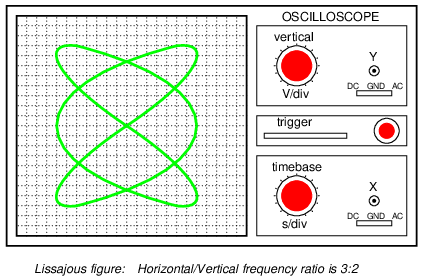
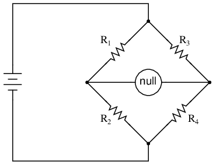
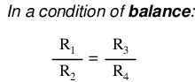

AC electromechanical meter movements come in two basic arrangements: those based on DC movement designs, and those engineered specifically for AC use. Permanent-magnet moving coil (PMMC) meter movements will not work correctly if directly connected to alternating current, because the direction of needle movement will change with each half-cycle of the AC. (Figure below) Permanent-magnet meter movements, like permanent-magnet motors, are devices whose motion depends on the polarity of the applied voltage (or, you can think of it in terms of the direction of the current).
Passing AC through this D'Arsonval meter movement causes useless flutter of the needle.
In order to use a DC-style meter movement such as the D'Arsonval design, the alternating current must be rectified into DC. This is most easily accomplished through the use of devices called diodes. We saw diodes used in an example circuit demonstrating the creation of harmonic frequencies from a distorted (or rectified) sine wave. Without going into elaborate detail over how and why diodes work as they do, just remember that they each act like a one-way valve for electrons to flow: acting as a conductor for one polarity and an insulator for another. Oddly enough, the arrowhead in each diode symbol points against the permitted direction of electron flow rather than with it as one might expect. Arranged in a bridge, four diodes will serve to steer AC through the meter movement in a constant direction throughout all portions of the AC cycle: (Figure below)
Passing AC through this Rectified AC meter movement will drive it in one direction.
Another strategy for a practical AC meter movement is to redesign the movement without the inherent polarity sensitivity of the DC types. This means avoiding the use of permanent magnets. Probably the simplest design is to use a nonmagnetized iron vane to move the needle against spring tension, the vane being attracted toward a stationary coil of wire energized by the AC quantity to be measured as in Figure below.
Iron-vane electromechanical meter movement.
Electrostatic attraction between two metal plates separated by an air gap is an alternative mechanism for generating a needle-moving force proportional to applied voltage. This works just as well for AC as it does for DC, or should I say, just as poorly! The forces involved are very small, much smaller than the magnetic attraction between an energized coil and an iron vane, and as such these “electrostatic” meter movements tend to be fragile and easily disturbed by physical movement. But, for some high-voltage AC applications, the electrostatic movement is an elegant technology. If nothing else, this technology possesses the advantage of extremely high input impedance, meaning that no current need be drawn from the circuit under test. Also, electrostatic meter movements are capable of measuring very high voltages without need for range resistors or other, external apparatus.
When a sensitive meter movement needs to be re-ranged to function as an AC voltmeter, series-connected “multiplier” resistors and/or resistive voltage dividers may be employed just as in DC meter design: (Figure below)
Multiplier resistor (a) or resistive divider (b) scales the range of the basic meter movement.
Capacitors may be used instead of resistors, though, to make voltmeter divider circuits. This strategy has the advantage of being non-dissipative (no true power consumed and no heat produced): (Figure below)
AC voltmeter with capacitive divider.
If the meter movement is electrostatic, and thus inherently capacitive in nature, a single “multiplier” capacitor may be connected in series to give it a greater voltage measuring range, just as a series-connected multiplier resistor gives a moving-coil (inherently resistive) meter movement a greater voltage range: (Figure below)
An electrostatic meter movement may use a capacitive multiplier to multiply the scale of the basic meter movement..
The Cathode Ray Tube (CRT) mentioned in the DC metering chapter is ideally suited for measuring AC voltages, especially if the electron beam is swept side-to-side across the screen of the tube while the measured AC voltage drives the beam up and down. A graphical representation of the AC wave shape and not just a measurement of magnitude can easily be had with such a device. However, CRT's have the disadvantages of weight, size, significant power consumption, and fragility (being made of evacuated glass) working against them. For these reasons, electromechanical AC meter movements still have a place in practical usage.
With some of the advantages and disadvantages of these meter movement technologies having been discussed already, there is another factor crucially important for the designer and user of AC metering instruments to be aware of. This is the issue of RMS measurement. As we already know, AC measurements are often cast in a scale of DC power equivalence, called RMS (Root-Mean-Square) for the sake of meaningful comparisons with DC and with other AC waveforms of varying shape. None of the meter movement technologies so far discussed inherently measure the RMS value of an AC quantity. Meter movements relying on the motion of a mechanical needle (“rectified” D'Arsonval, iron-vane, and electrostatic) all tend to mechanically average the instantaneous values into an overall average value for the waveform. This average value is not necessarily the same as RMS, although many times it is mistaken as such. Average and RMS values rate against each other as such for these three common waveform shapes: (Figure below)

RMS, Average, and Peak-to-Peak values for sine, square, and triangle waves.
Since RMS seems to be the kind of measurement most people are interested in obtaining with an instrument, and electromechanical meter movements naturally deliver average measurements rather than RMS, what are AC meter designers to do? Cheat, of course! Typically the assumption is made that the waveform shape to be measured is going to be sine (by far the most common, especially for power systems), and then the meter movement scale is altered by the appropriate multiplication factor. For sine waves we see that RMS is equal to 0.707 times the peak value while Average is 0.637 times the peak, so we can divide one figure by the other to obtain an average-to-RMS conversion factor of 1.109:
In other words, the meter movement will be calibrated to indicate approximately 1.11 times higher than it would ordinarily (naturally) indicate with no special accommodations. It must be stressed that this “cheat” only works well when the meter is used to measure pure sine wave sources. Note that for triangle waves, the ratio between RMS and Average is not the same as for sine waves:
With square waves, the RMS and Average values are identical! An AC meter calibrated to accurately read RMS voltage or current on a pure sine wave will not give the proper value while indicating the magnitude of anything other than a perfect sine wave. This includes triangle waves, square waves, or any kind of distorted sine wave. With harmonics becoming an ever-present phenomenon in large AC power systems, this matter of accurate RMS measurement is no small matter.
The astute reader will note that I have omitted the CRT “movement” from the RMS/Average discussion. This is because a CRT with its practically weightless electron beam “movement” displays the Peak (or Peak-to-Peak if you wish) of an AC waveform rather than Average or RMS. Still, a similar problem arises: how do you determine the RMS value of a waveform from it? Conversion factors between Peak and RMS only hold so long as the waveform falls neatly into a known category of shape (sine, triangle, and square are the only examples with Peak/RMS/Average conversion factors given here!).
One answer is to design the meter movement around the very definition of RMS: the effective heating value of an AC voltage/current as it powers a resistive load. Suppose that the AC source to be measured is connected across a resistor of known value, and the heat output of that resistor is measured with a device like a thermocouple. This would provide a far more direct measurement means of RMS than any conversion factor could, for it will work with ANY waveform shape whatsoever: (Figure below)
Direct reading thermal RMS voltmeter accommodates any wave shape.
While the device shown above is somewhat crude and would suffer from unique engineering problems of its own, the concept illustrated is very sound. The resistor converts the AC voltage or current quantity into a thermal (heat) quantity, effectively squaring the values in real-time. The system's mass works to average these values by the principle of thermal inertia, and then the meter scale itself is calibrated to give an indication based on the square-root of the thermal measurement: perfect Root-Mean-Square indication all in one device! In fact, one major instrument manufacturer has implemented this technique into its high-end line of handheld electronic multimeters for “true-RMS” capability.
Calibrating AC voltmeters and ammeters for different full-scale ranges of operation is much the same as with DC instruments: series “multiplier” resistors are used to give voltmeter movements higher range, and parallel “shunt” resistors are used to allow ammeter movements to measure currents beyond their natural range. However, we are not limited to these techniques as we were with DC: because we can use transformers with AC, meter ranges can be electromagnetically rather than resistively “stepped up” or “stepped down,” sometimes far beyond what resistors would have practically allowed for. Potential Transformers (PT's) and Current Transformers (CT's) are precision instrument devices manufactured to produce very precise ratios of transformation between primary and secondary windings. They can allow small, simple AC meter movements to indicate extremely high voltages and currents in power systems with accuracy and complete electrical isolation (something multiplier and shunt resistors could never do): (Figure below)
(CT) Current transformer scales current down. (PT) Potential transformer scales voltage down.
Shown here is a voltage and current meter panel from a three-phase AC system. The three “donut” current transformers (CT's) can be seen in the rear of the panel. Three AC ammeters (rated 5 amps full-scale deflection each) on the front of the panel indicate current through each conductor going through a CT. As this panel has been removed from service, there are no current-carrying conductors threaded through the center of the CT “donuts” anymore: (Figure below)
Toroidal current transformers scale high current levels down for application to 5 A full-scale AC ammeters.
Because of the expense (and often large size) of instrument transformers, they are not used to scale AC meters for any applications other than high voltage and high current. For scaling a milliamp or microamp movement to a range of 120 volts or 5 amps, normal precision resistors (multipliers and shunts) are used, just as with DC.
An important electrical quantity with no equivalent in DC circuits is frequency. Frequency measurement is very important in many applications of alternating current, especially in AC power systems designed to run efficiently at one frequency and one frequency only. If the AC is being generated by an electromechanical alternator, the frequency will be directly proportional to the shaft speed of the machine, and frequency could be measured simply by measuring the speed of the shaft. If frequency needs to be measured at some distance from the alternator, though, other means of measurement will be necessary.
One simple but crude method of frequency measurement in power systems utilizes the principle of mechanical resonance. Every physical object possessing the property of elasticity (springiness) has an inherent frequency at which it will prefer to vibrate. The tuning fork is a great example of this: strike it once and it will continue to vibrate at a tone specific to its length. Longer tuning forks have lower resonant frequencies: their tones will be lower on the musical scale than shorter forks.
Imagine a row of progressively-sized tuning forks arranged side-by-side. They are all mounted on a common base, and that base is vibrated at the frequency of the measured AC voltage (or current) by means of an electromagnet. Whichever tuning fork is closest in resonant frequency to the frequency of that vibration will tend to shake the most (or the loudest). If the forks' tines were flimsy enough, we could see the relative motion of each by the length of the blur we would see as we inspected each one from an end-view perspective. Well, make a collection of “tuning forks” out of a strip of sheet metal cut in a pattern akin to a rake, and you have the vibrating reed frequency meter: (Figure below)
Vibrating reed frequency meter diagram.
The user of this meter views the ends of all those unequal length reeds as they are collectively shaken at the frequency of the applied AC voltage to the coil. The one closest in resonant frequency to the applied AC will vibrate the most, looking something like Figure below.
Vibrating reed frequency meter front panel.
Vibrating reed meters, obviously, are not precision instruments, but they are very simple and therefore easy to manufacture to be rugged. They are often found on small engine-driven generator sets for the purpose of setting engine speed so that the frequency is somewhat close to 60 (50 in Europe) Hertz.
While reed-type meters are imprecise, their operational principle is not. In lieu of mechanical resonance, we may substitute electrical resonance and design a frequency meter using an inductor and capacitor in the form of a tank circuit (parallel inductor and capacitor). See Figure below. One or both components are made adjustable, and a meter is placed in the circuit to indicate maximum amplitude of voltage across the two components. The adjustment knob(s) are calibrated to show resonant frequency for any given setting, and the frequency is read from them after the device has been adjusted for maximum indication on the meter. Essentially, this is a tunable filter circuit which is adjusted and then read in a manner similar to a bridge circuit (which must be balanced for a “null” condition and then read).
Resonant frequency meter “peaks” as L-C resonant frequency is tuned to test frequency.
This technique is a popular one for amateur radio operators (or at least it was before the advent of inexpensive digital frequency instruments called counters), especially because it doesn't require direct connection to the circuit. So long as the inductor and/or capacitor can intercept enough stray field (magnetic or electric, respectively) from the circuit under test to cause the meter to indicate, it will work.
In frequency as in other types of electrical measurement, the most accurate means of measurement are usually those where an unknown quantity is compared against a known standard, the basic instrument doing nothing more than indicating when the two quantities are equal to each other. This is the basic principle behind the DC (Wheatstone) bridge circuit and it is a sound metrological principle applied throughout the sciences. If we have access to an accurate frequency standard (a source of AC voltage holding very precisely to a single frequency), then measurement of any unknown frequency by comparison should be relatively easy.
For that frequency standard, we turn our attention back to the tuning fork, or at least a more modern variation of it called the quartz crystal. Quartz is a naturally occurring mineral possessing a very interesting property called piezoelectricity. Piezoelectric materials produce a voltage across their length when physically stressed, and will physically deform when an external voltage is applied across their lengths. This deformation is very, very slight in most cases, but it does exist.
Quartz rock is elastic (springy) within that small range of bending which an external voltage would produce, which means that it will have a mechanical resonant frequency of its own capable of being manifested as an electrical voltage signal. In other words, if a chip of quartz is struck, it will “ring” with its own unique frequency determined by the length of the chip, and that resonant oscillation will produce an equivalent voltage across multiple points of the quartz chip which can be tapped into by wires fixed to the surface of the chip. In reciprocal manner, the quartz chip will tend to vibrate most when it is “excited” by an applied AC voltage at precisely the right frequency, just like the reeds on a vibrating-reed frequency meter.
Chips of quartz rock can be precisely cut for desired resonant frequencies, and that chip mounted securely inside a protective shell with wires extending for connection to an external electric circuit. When packaged as such, the resulting device is simply called a crystal (or sometimes “xtal”). The schematic symbol is shown in Figure below.

Crystal (frequency determing element) schematic symbol.
Electrically, that quartz chip is equivalent to a series LC resonant circuit. (Figure below) The dielectric properties of quartz contribute an additional capacitive element to the equivalent circuit.
Quartz crystal equivalent circuit.
The “capacitance” and “inductance” shown in series are merely electrical equivalents of the quartz's mechanical resonance properties: they do not exist as discrete components within the crystal. The capacitance shown in parallel due to the wire connections across the dielectric (insulating) quartz body is real, and it has an effect on the resonant response of the whole system. A full discussion on crystal dynamics is not necessary here, but what needs to be understood about crystals is this resonant circuit equivalence and how it can be exploited within an oscillator circuit to achieve an output voltage with a stable, known frequency.
Crystals, as resonant elements, typically have much higher “Q” (quality) values than tank circuits built from inductors and capacitors, principally due to the relative absence of stray resistance, making their resonant frequencies very definite and precise. Because the resonant frequency is solely dependent on the physical properties of quartz (a very stable substance, mechanically), the resonant frequency variation over time with a quartz crystal is very, very low. This is how quartz movement watches obtain their high accuracy: by means of an electronic oscillator stabilized by the resonant action of a quartz crystal.
For laboratory applications, though, even greater frequency stability may be desired. To achieve this, the crystal in question may be placed in a temperature stabilized environment (usually an oven), thus eliminating frequency errors due to thermal expansion and contraction of the quartz.
For the ultimate in a frequency standard though, nothing discovered thus far surpasses the accuracy of a single resonating atom. This is the principle of the so-called atomic clock, which uses an atom of mercury (or cesium) suspended in a vacuum, excited by outside energy to resonate at its own unique frequency. The resulting frequency is detected as a radio-wave signal and that forms the basis for the most accurate clocks known to humanity. National standards laboratories around the world maintain a few of these hyper-accurate clocks, and broadcast frequency signals based on those atoms' vibrations for scientists and technicians to tune in and use for frequency calibration purposes.
Now we get to the practical part: once we have a source of accurate frequency, how do we compare that against an unknown frequency to obtain a measurement? One way is to use a CRT as a frequency-comparison device. Cathode Ray Tubes typically have means of deflecting the electron beam in the horizontal as well as the vertical axis. If metal plates are used to electrostatically deflect the electrons, there will be a pair of plates to the left and right of the beam as well as a pair of plates above and below the beam as in Figure below.
Cathode ray tube (CRT) with vertical and horizontal deflection plates.
If we allow one AC signal to deflect the beam up and down (connect that AC voltage source to the “vertical” deflection plates) and another AC signal to deflect the beam left and right (using the other pair of deflection plates), patterns will be produced on the screen of the CRT indicative of the ratio of these two AC frequencies. These patterns are called Lissajous figures and are a common means of comparative frequency measurement in electronics.
If the two frequencies are the same, we will obtain a simple figure on the screen of the CRT, the shape of that figure being dependent upon the phase shift between the two AC signals. Here is a sampling of Lissajous figures for two sine-wave signals of equal frequency, shown as they would appear on the face of an oscilloscope (an AC voltage-measuring instrument using a CRT as its “movement”). The first picture is of the Lissajous figure formed by two AC voltages perfectly in phase with each other: (Figure below)
Lissajous figure: same frequency, zero degrees phase shift.
If the two AC voltages are not in phase with each other, a straight line will not be formed. Rather, the Lissajous figure will take on the appearance of an oval, becoming perfectly circular if the phase shift is exactly 90o between the two signals, and if their amplitudes are equal: (Figure below)
Lissajous figure: same frequency, 90 or 270 degrees phase shift.
Finally, if the two AC signals are directly opposing one another in phase (180o shift), we will end up with a line again, only this time it will be oriented in the opposite direction: (Figure below)
Lissajous figure: same frequency, 180 degrees phase shift.
When we are faced with signal frequencies that are not the same, Lissajous figures get quite a bit more complex. Consider the following examples and their given vertical/horizontal frequency ratios: (Figure below)
Lissajous figure: Horizontal frequency is twice that of vertical.
The more complex the ratio between horizontal and vertical frequencies, the more complex the Lissajous figure. Consider the following illustration of a 3:1 frequency ratio between horizontal and vertical: (Figure below)
Lissajous figure: Horizontal frequency is three times that of vertical.
. . . and a 3:2 frequency ratio (horizontal = 3, vertical = 2) in Figure below.

Lissajous figure: Horizontal/vertical frequency ratio is 3:2.
In cases where the frequencies of the two AC signals are not exactly a simple ratio of each other (but close), the Lissajous figure will appear to “move,” slowly changing orientation as the phase angle between the two waveforms rolls between 0o and 180o. If the two frequencies are locked in an exact integer ratio between each other, the Lissajous figure will be stable on the viewscreen of the CRT.
The physics of Lissajous figures limits their usefulness as a frequency-comparison technique to cases where the frequency ratios are simple integer values (1:1, 1:2, 1:3, 2:3, 3:4, etc.). Despite this limitation, Lissajous figures are a popular means of frequency comparison wherever an accessible frequency standard (signal generator) exists.
Power measurement in AC circuits can be quite a bit more complex than with DC circuits for the simple reason that phase shift complicates the matter beyond multiplying voltage by current figures obtained with meters. What is needed is an instrument able to determine the product (multiplication) of instantaneous voltage and current. Fortunately, the common electrodynamometer movement with its stationary and moving coil does a fine job of this.
Three phase power measurement can be accomplished using two dynamometer movements with a common shaft linking the two moving coils together so that a single pointer registers power on a meter movement scale. This, obviously, makes for a rather expensive and complex movement mechanism, but it is a workable solution.
An ingenious method of deriving an electronic power meter (one that generates an electric signal representing power in the system rather than merely move a pointer) is based on the Hall effect. The Hall effect is an unusual effect first noticed by E. H. Hall in 1879, whereby a voltage is generated along the width of a current-carrying conductor exposed to a perpendicular magnetic field: (Figure below)
Hall effect: Voltage is proportional to current and strength of the perpendicular magnetic field.
The voltage generated across the width of the flat, rectangular conductor is directly proportional to both the magnitude of the current through it and the strength of the magnetic field. Mathematically, it is a product (multiplication) of these two variables. The amount of “Hall Voltage” produced for any given set of conditions also depends on the type of material used for the flat, rectangular conductor. It has been found that specially prepared “semiconductor” materials produce a greater Hall voltage than do metals, and so modern Hall Effect devices are made of these.
It makes sense then that if we were to build a device using a Hall-effect sensor where the current through the conductor was pushed by AC voltage from an external circuit and the magnetic field was set up by a pair or wire coils energized by the current of the AC power circuit, the Hall voltage would be in direct proportion to the multiple of circuit current and voltage. Having no mass to move (unlike an electromechanical movement), this device is able to provide instantaneous power measurement: (Figure below)
Hall effect power sensor measures instantaneous power.
Not only will the output voltage of the Hall effect device be the representation of instantaneous power at any point in time, but it will also be a DC signal! This is because the Hall voltage polarity is dependent upon both the polarity of the magnetic field and the direction of current through the conductor. If both current direction and magnetic field polarity reverses -- as it would ever half-cycle of the AC power -- the output voltage polarity will stay the same.
If voltage and current in the power circuit are 90o out of phase (a power factor of zero, meaning no real power delivered to the load), the alternate peaks of Hall device current and magnetic field will never coincide with each other: when one is at its peak, the other will be zero. At those points in time, the Hall output voltage will likewise be zero, being the product (multiplication) of current and magnetic field strength. Between those points in time, the Hall output voltage will fluctuate equally between positive and negative, generating a signal corresponding to the instantaneous absorption and release of power through the reactive load. The net DC output voltage will be zero, indicating zero true power in the circuit.
Any phase shift between voltage and current in the power circuit less than 90o will result in a Hall output voltage that oscillates between positive and negative, but spends more time positive than negative. Consequently there will be a net DC output voltage. Conditioned through a low-pass filter circuit, this net DC voltage can be separated from the AC mixed with it, the final output signal registered on a sensitive DC meter movement.
Often it is useful to have a meter to totalize power usage over a period of time rather than instantaneously. The output of such a meter can be set in units of Joules, or total energy consumed, since power is a measure of work being done per unit time. Or, more commonly, the output of the meter can be set in units of Watt-Hours.
Mechanical means for measuring Watt-Hours are usually centered around the concept of the motor: build an AC motor that spins at a rate of speed proportional to the instantaneous power in a circuit, then have that motor turn an “odometer” style counting mechanism to keep a running total of energy consumed. The “motor” used in these meters has a rotor made of a thin aluminum disk, with the rotating magnetic field established by sets of coils energized by line voltage and load current so that the rotational speed of the disk is dependent on both voltage and current.
It used to be with large AC power systems that “power quality” was an unheard-of concept, aside from power factor. Almost all loads were of the “linear” variety, meaning that they did not distort the shape of the voltage sine wave, or cause non-sinusoidal currents to flow in the circuit. This is not true anymore. Loads controlled by “nonlinear” electronic components are becoming more prevalent in both home and industry, meaning that the voltages and currents in the power system(s) feeding these loads are rich in harmonics: what should be nice, clean sine-wave voltages and currents are becoming highly distorted, which is equivalent to the presence of an infinite series of high-frequency sine waves at multiples of the fundamental power line frequency.
Excessive harmonics in an AC power system can overheat transformers, cause exceedingly high neutral conductor currents in three-phase systems, create electromagnetic “noise” in the form of radio emissions that can interfere with sensitive electronic equipment, reduce electric motor horsepower output, and can be difficult to pinpoint. With problems like these plaguing power systems, engineers and technicians require ways to precisely detect and measure these conditions.
Power Quality is the general term given to represent an AC power system's freedom from harmonic content. A “power quality” meter is one that gives some form of harmonic content indication.
A simple way for a technician to determine power quality in their system without sophisticated equipment is to compare voltage readings between two accurate voltmeters measuring the same system voltage: one meter being an “averaging” type of unit (such as an electromechanical movement meter) and the other being a “true-RMS” type of unit (such as a high-quality digital meter). Remember that “averaging” type meters are calibrated so that their scales indicate volts RMS, based on the assumption that the AC voltage being measured is sinusoidal. If the voltage is anything but sinewave-shaped, the averaging meter will not register the proper value, whereas the true-RMS meter always will, regardless of waveshape. The rule of thumb here is this: the greater the disparity between the two meters, the worse the power quality is, and the greater its harmonic content. A power system with good quality power should generate equal voltage readings between the two meters, to within the rated error tolerance of the two instruments.
Another qualitative measurement of power quality is the oscilloscope test: connect an oscilloscope (CRT) to the AC voltage and observe the shape of the wave. Anything other than a clean sine wave could be an indication of trouble: (Figure below)
This is a moderately ugly “sine” wave. Definite harmonic content here!
Still, if quantitative analysis (definite, numerical figures) is necessary, there is no substitute for an instrument specifically designed for that purpose. Such an instrument is called a power quality meter and is sometimes better known in electronic circles as a low-frequency spectrum analyzer. What this instrument does is provide a graphical representation on a CRT or digital display screen of the AC voltage's frequency “spectrum.” Just as a prism splits a beam of white light into its constituent color components (how much red, orange, yellow, green, and blue is in that light), the spectrum analyzer splits a mixed-frequency signal into its constituent frequencies, and displays the result in the form of a histogram: (Figure below)
Power quality meter is a low frequency spectrum analyzer.
Each number on the horizontal scale of this meter represents a harmonic of the fundamental frequency. For American power systems, the “1” represents 60 Hz (the 1st harmonic, or fundamental), the “3” for 180 Hz (the 3rd harmonic), the “5” for 300 Hz (the 5th harmonic), and so on. The black rectangles represent the relative magnitudes of each of these harmonic components in the measured AC voltage. A pure, 60 Hz sine wave would show only a tall black bar over the “1” with no black bars showing at all over the other frequency markers on the scale, because a pure sine wave has no harmonic content.
Power quality meters such as this might be better referred to as overtone meters, because they are designed to display only those frequencies known to be generated by the power system. In three-phase AC power systems (predominant for large power applications), even-numbered harmonics tend to be canceled out, and so only harmonics existing in significant measure are the odd-numbered.
Meters like these are very useful in the hands of a skilled technician, because different types of nonlinear loads tend to generate different spectrum “signatures” which can clue the troubleshooter to the source of the problem. These meters work by very quickly sampling the AC voltage at many different points along the waveform shape, digitizing those points of information, and using a microprocessor (small computer) to perform numerical Fourier analysis (the Fast Fourier Transform or “FFT” algorithm) on those data points to arrive at harmonic frequency magnitudes. The process is not much unlike what the SPICE program tells a computer to do when performing a Fourier analysis on a simulated circuit voltage or current waveform.
As we saw with DC measurement circuits, the circuit configuration known as a bridge can be a very useful way to measure unknown values of resistance. This is true with AC as well, and we can apply the very same principle to the accurate measurement of unknown impedances.
To review, the bridge circuit works as a pair of two-component voltage dividers connected across the same source voltage, with a null-detector meter movement connected between them to indicate a condition of “balance” at zero volts: (Figure below)

A balanced bridge shows a “null”, or minimum reading, on the indicator.
Any one of the four resistors in the above bridge can be the resistor of unknown value, and its value can be determined by a ratio of the other three, which are “calibrated,” or whose resistances are known to a precise degree. When the bridge is in a balanced condition (zero voltage as indicated by the null detector), the ratio works out to be this:

One of the advantages of using a bridge circuit to measure resistance is that the voltage of the power source is irrelevant. Practically speaking, the higher the supply voltage, the easier it is to detect a condition of imbalance between the four resistors with the null detector, and thus the more sensitive it will be. A greater supply voltage leads to the possibility of increased measurement precision. However, there will be no fundamental error introduced as a result of a lesser or greater power supply voltage unlike other types of resistance measurement schemes.
Impedance bridges work the same, only the balance equation is with complex quantities, as both magnitude and phase across the components of the two dividers must be equal in order for the null detector to indicate “zero.” The null detector, of course, must be a device capable of detecting very small AC voltages. An oscilloscope is often used for this, although very sensitive electromechanical meter movements and even headphones (small speakers) may be used if the source frequency is within audio range.
One way to maximize the effectiveness of audio headphones as a null detector is to connect them to the signal source through an impedance-matching transformer. Headphone speakers are typically low-impedance units (8 Ω), requiring substantial current to drive, and so a step-down transformer helps “match” low-current signals to the impedance of the headphone speakers. An audio output transformer works well for this purpose: (Figure below)
“Modern” low-Ohm headphones require an impedance matching transformer for use as a sensitive null detector.
Using a pair of headphones that completely surround the ears (the “closed-cup” type), I've been able to detect currents of less than 0.1 µA with this simple detector circuit. Roughly equal performance was obtained using two different step-down transformers: a small power transformer (120/6 volt ratio), and an audio output transformer (1000:8 ohm impedance ratio). With the pushbutton switch in place to interrupt current, this circuit is usable for detecting signals from DC to over 2 MHz: even if the frequency is far above or below the audio range, a “click” will be heard from the headphones each time the switch is pressed and released.
Connected to a resistive bridge, the whole circuit looks like Figure below.
Bridge with sensitive AC null detector.
Listening to the headphones as one or more of the resistor “arms” of the bridge is adjusted, a condition of balance will be realized when the headphones fail to produce “clicks” (or tones, if the bridge's power source frequency is within audio range) as the switch is actuated.
When describing general AC bridges, where impedances and not just resistances must be in proper ratio for balance, it is sometimes helpful to draw the respective bridge legs in the form of box-shaped components, each one with a certain impedance: (Figure below)
Generalized AC impedance bridge: Z = nonspecific complex impedance.
For this general form of AC bridge to balance, the impedance ratios of each branch must be equal:
Again, it must be stressed that the impedance quantities in the above equation must be complex, accounting for both magnitude and phase angle. It is insufficient that the impedance magnitudes alone be balanced; without phase angles in balance as well, there will still be voltage across the terminals of the null detector and the bridge will not be balanced.
Bridge circuits can be constructed to measure just about any device value desired, be it capacitance, inductance, resistance, or even “Q.” As always in bridge measurement circuits, the unknown quantity is always “balanced” against a known standard, obtained from a high-quality, calibrated component that can be adjusted in value until the null detector device indicates a condition of balance. Depending on how the bridge is set up, the unknown component's value may be determined directly from the setting of the calibrated standard, or derived from that standard through a mathematical formula.
A couple of simple bridge circuits are shown below, one for inductance (Figure below) and one for capacitance: (Figure below)
Symmetrical bridge measures unknown inductor by comparison to a standard inductor.
Symmetrical bridge measures unknown capacitor by comparison to a standard capacitor.
Simple “symmetrical” bridges such as these are so named because they exhibit symmetry (mirror-image similarity) from left to right. The two bridge circuits shown above are balanced by adjusting the calibrated reactive component (Ls or Cs). They are a bit simplified from their real-life counterparts, as practical symmetrical bridge circuits often have a calibrated, variable resistor in series or parallel with the reactive component to balance out stray resistance in the unknown component. But, in the hypothetical world of perfect components, these simple bridge circuits do just fine to illustrate the basic concept.
An example of a little extra complexity added to compensate for real-world effects can be found in the so-called Wien bridge, which uses a parallel capacitor-resistor standard impedance to balance out an unknown series capacitor-resistor combination. (Figure below) All capacitors have some amount of internal resistance, be it literal or equivalent (in the form of dielectric heating losses) which tend to spoil their otherwise perfectly reactive natures. This internal resistance may be of interest to measure, and so the Wien bridge attempts to do so by providing a balancing impedance that isn't “pure” either:
Wein Bridge measures both capacitive Cx and resistive Rx components of “real” capacitor.
Being that there are two standard components to be adjusted (a resistor and a capacitor) this bridge will take a little more time to balance than the others we've seen so far. The combined effect of Rs and Cs is to alter the magnitude and phase angle until the bridge achieves a condition of balance. Once that balance is achieved, the settings of Rs and Cs can be read from their calibrated knobs, the parallel impedance of the two determined mathematically, and the unknown capacitance and resistance determined mathematically from the balance equation (Z1/Z2 = Z3/Z4).
It is assumed in the operation of the Wien bridge that the standard capacitor has negligible internal resistance, or at least that resistance is already known so that it can be factored into the balance equation. Wien bridges are useful for determining the values of “lossy” capacitor designs like electrolytics, where the internal resistance is relatively high. They are also used as frequency meters, because the balance of the bridge is frequency-dependent. When used in this fashion, the capacitors are made fixed (and usually of equal value) and the top two resistors are made variable and are adjusted by means of the same knob.
An interesting variation on this theme is found in the next bridge circuit, used to precisely measure inductances.
Maxwell-Wein bridge measures an inductor in terms of a capacitor standard.
This ingenious bridge circuit is known as the Maxwell-Wien bridge (sometimes known plainly as the Maxwell bridge), and is used to measure unknown inductances in terms of calibrated resistance and capacitance. (Figure above) Calibration-grade inductors are more difficult to manufacture than capacitors of similar precision, and so the use of a simple “symmetrical” inductance bridge is not always practical. Because the phase shifts of inductors and capacitors are exactly opposite each other, a capacitive impedance can balance out an inductive impedance if they are located in opposite legs of a bridge, as they are here.
Another advantage of using a Maxwell bridge to measure inductance rather than a symmetrical inductance bridge is the elimination of measurement error due to mutual inductance between two inductors. Magnetic fields can be difficult to shield, and even a small amount of coupling between coils in a bridge can introduce substantial errors in certain conditions. With no second inductor to react with in the Maxwell bridge, this problem is eliminated.
For easiest operation, the standard capacitor (Cs) and the resistor in parallel with it (Rs) are made variable, and both must be adjusted to achieve balance. However, the bridge can be made to work if the capacitor is fixed (non-variable) and more than one resistor made variable (at least the resistor in parallel with the capacitor, and one of the other two). However, in the latter configuration it takes more trial-and-error adjustment to achieve balance, as the different variable resistors interact in balancing magnitude and phase.
Unlike the plain Wien bridge, the balance of the Maxwell-Wien bridge is independent of source frequency, and in some cases this bridge can be made to balance in the presence of mixed frequencies from the AC voltage source, the limiting factor being the inductor's stability over a wide frequency range.
There are more variations beyond these designs, but a full discussion is not warranted here. General-purpose impedance bridge circuits are manufactured which can be switched into more than one configuration for maximum flexibility of use.
A potential problem in sensitive AC bridge circuits is that of stray capacitance between either end of the null detector unit and ground (earth) potential. Because capacitances can “conduct” alternating current by charging and discharging, they form stray current paths to the AC voltage source which may affect bridge balance: (Figure below)
Stray capacitance to ground may introduce errors into the bridge.
While reed-type meters are imprecise, their operational principle is not. In lieu of mechanical resonance, we may substitute electrical resonance and design a frequency meter using an inductor and capacitor in the form of a tank circuit (parallel inductor and capacitor). One or both components are made adjustable, and a meter is placed in the circuit to indicate maximum amplitude of voltage across the two components. The adjustment knob(s) are calibrated to show resonant frequency for any given setting, and the frequency is read from them after the device has been adjusted for maximum indication on the meter. Essentially, this is a tunable filter circuit which is adjusted and then read in a manner similar to a bridge circuit (which must be balanced for a “null” condition and then read). The problem is worsened if the AC voltage source is firmly grounded at one end, the total stray impedance for leakage currents made far less and any leakage currents through these stray capacitances made greater as a result: (Figure below)
Stray capacitance errors are more severe if one side of the AC supply is grounded.
One way of greatly reducing this effect is to keep the null detector at ground potential, so there will be no AC voltage between it and the ground, and thus no current through stray capacitances. However, directly connecting the null detector to ground is not an option, as it would create a direct current path for stray currents, which would be worse than any capacitive path. Instead, a special voltage divider circuit called a Wagner ground or Wagner earth may be used to maintain the null detector at ground potential without the need for a direct connection to the null detector. (Figure below)
Wagner ground for AC supply minimizes the effects of stray capacitance to ground on the bridge.
The Wagner earth circuit is nothing more than a voltage divider, designed to have the voltage ratio and phase shift as each side of the bridge. Because the midpoint of the Wagner divider is directly grounded, any other divider circuit (including either side of the bridge) having the same voltage proportions and phases as the Wagner divider, and powered by the same AC voltage source, will be at ground potential as well. Thus, the Wagner earth divider forces the null detector to be at ground potential, without a direct connection between the detector and ground.
There is often a provision made in the null detector connection to confirm proper setting of the Wagner earth divider circuit: a two-position switch, (Figure below) so that one end of the null detector may be connected to either the bridge or the Wagner earth. When the null detector registers zero signal in both switch positions, the bridge is not only guaranteed to be balanced, but the null detector is also guaranteed to be at zero potential with respect to ground, thus eliminating any errors due to leakage currents through stray detector-to-ground capacitances:

Switch-up position allows adjustment of the Wagner ground.
Just as devices have been made to measure certain physical quantities and repeat that information in the form of DC electrical signals (thermocouples, strain gauges, pH probes, etc.), special devices have been made that do the same with AC.
It is often necessary to be able to detect and transmit the physical position of mechanical parts via electrical signals. This is especially true in the fields of automated machine tool control and robotics. A simple and easy way to do this is with a potentiometer: (Figure below)
Potentiometer tap voltage indicates position of an object slaved to the shaft.
However, potentiometers have their own unique problems. For one, they rely on physical contact between the “wiper” and the resistance strip, which means they suffer the effects of physical wear over time. As potentiometers wear, their proportional output versus shaft position becomes less and less certain. You might have already experienced this effect when adjusting the volume control on an old radio: when twisting the knob, you might hear “scratching” sounds coming out of the speakers. Those noises are the result of poor wiper contact in the volume control potentiometer.
Also, this physical contact between wiper and strip creates the possibility of arcing (sparking) between the two as the wiper is moved. With most potentiometer circuits, the current is so low that wiper arcing is negligible, but it is a possibility to be considered. If the potentiometer is to be operated in an environment where combustible vapor or dust is present, this potential for arcing translates into a potential for an explosion!
Using AC instead of DC, we are able to completely avoid sliding contact between parts if we use a variable transformer instead of a potentiometer. Devices made for this purpose are called LVDT's, which stands for Linear Variable Differential Transformers. The design of an LVDT looks like this: (Figure below)
AC output of linear variable differential transformer (LVDT) indicates core position.
Obviously, this device is a transformer: it has a single primary winding powered by an external source of AC voltage, and two secondary windings connected in series-bucking fashion. It is variable because the core is free to move between the windings. It is differential because of the way the two secondary windings are connected. Being arranged to oppose each other (180o out of phase) means that the output of this device will be the difference between the voltage output of the two secondary windings. When the core is centered and both windings are outputting the same voltage, the net result at the output terminals will be zero volts. It is called linear because the core's freedom of motion is straight-line.
The AC voltage output by an LVDT indicates the position of the movable core. Zero volts means that the core is centered. The further away the core is from center position, the greater percentage of input (“excitation”) voltage will be seen at the output. The phase of the output voltage relative to the excitation voltage indicates which direction from center the core is offset.
The primary advantage of an LVDT over a potentiometer for position sensing is the absence of physical contact between the moving and stationary parts. The core does not contact the wire windings, but slides in and out within a nonconducting tube. Thus, the LVDT does not “wear” like a potentiometer, nor is there the possibility of creating an arc.
Excitation of the LVDT is typically 10 volts RMS or less, at frequencies ranging from power line to the high audio (20 kHz) range. One potential disadvantage of the LVDT is its response time, which is mostly dependent on the frequency of the AC voltage source. If very quick response times are desired, the frequency must be higher to allow whatever voltage-sensing circuits enough cycles of AC to determine voltage level as the core is moved. To illustrate the potential problem here, imagine this exaggerated scenario: an LVDT powered by a 60 Hz voltage source, with the core being moved in and out hundreds of times per second. The output of this LVDT wouldn't even look like a sine wave because the core would be moved throughout its range of motion before the AC source voltage could complete a single cycle! It would be almost impossible to determine instantaneous core position if it moves faster than the instantaneous source voltage does.
A variation on the LVDT is the RVDT, or Rotary Variable Differential Transformer. This device works on almost the same principle, except that the core revolves on a shaft instead of moving in a straight line. RVDT's can be constructed for limited motion of 360o (full-circle) motion.
Continuing with this principle, we have what is known as a Synchro or Selsyn, which is a device constructed a lot like a wound-rotor polyphase AC motor or generator. The rotor is free to revolve a full 360o, just like a motor. On the rotor is a single winding connected to a source of AC voltage, much like the primary winding of an LVDT. The stator windings are usually in the form of a three-phase Y, although synchros with more than three phases have been built. (Figure below) A device with a two-phase stator is known as a resolver. A resolver produces sine and cosine outputs which indicate shaft position.
A synchro is wound with a three-phase stator winding, and a rotating field. A resolver has a two-phase stator.
Voltages induced in the stator windings from the rotor's AC excitation are not phase-shifted by 120o as in a real three-phase generator. If the rotor were energized with DC current rather than AC and the shaft spun continuously, then the voltages would be true three-phase. But this is not how a synchro is designed to be operated. Rather, this is a position-sensing device much like an RVDT, except that its output signal is much more definite. With the rotor energized by AC, the stator winding voltages will be proportional in magnitude to the angular position of the rotor, phase either 0o or 180o shifted, like a regular LVDT or RVDT. You could think of it as a transformer with one primary winding and three secondary windings, each secondary winding oriented at a unique angle. As the rotor is slowly turned, each winding in turn will line up directly with the rotor, producing full voltage, while the other windings will produce something less than full voltage.
Synchros are often used in pairs. With their rotors connected in parallel and energized by the same AC voltage source, their shafts will match position to a high degree of accuracy: (Figure below)
Synchro shafts are slaved to each other. Rotating one moves the other.
Such “transmitter/receiver” pairs have been used on ships to relay rudder position, or to relay navigational gyro position over fairly long distances. The only difference between the “transmitter” and the “receiver” is which one gets turned by an outside force. The “receiver” can just as easily be used as the “transmitter” by forcing its shaft to turn and letting the synchro on the left match position.
If the receiver's rotor is left unpowered, it will act as a position-error detector, generating an AC voltage at the rotor if the shaft is anything other than 90o or 270o shifted from the shaft position of the transmitter. The receiver rotor will no longer generate any torque and consequently will no longer automatically match position with the transmitter's: (Figure below)
AC voltmeter registers voltage if the receiver rotor is not rotated exactly 90 or 270 degrees from the transmitter rotor.
This can be thought of almost as a sort of bridge circuit that achieves balance only if the receiver shaft is brought to one of two (matching) positions with the transmitter shaft.
One rather ingenious application of the synchro is in the creation of a phase-shifting device, provided that the stator is energized by three-phase AC: (Figure below)
Full rotation of the rotor will smoothly shift the phase from 0o all the way to 360o (back to 0o).
As the synchro's rotor is turned, the rotor coil will progressively align with each stator coil, their respective magnetic fields being 120o phase-shifted from one another. In between those positions, these phase-shifted fields will mix to produce a rotor voltage somewhere between 0o, 120o, or 240o shift. The practical result is a device capable of providing an infinitely variable-phase AC voltage with the twist of a knob (attached to the rotor shaft).
A synchro or a resolver may measure linear motion if geared with a rack and pinion mechanism. A linear movement of a few inches (or cm) resulting in multiple revolutions of the synchro (resolver) generates a train of sinewaves. An Inductosyn® is a linear version of the resolver. It outputs signals like a resolver; though, it bears slight resemblance.
The Inductosyn consists of two parts: a fixed serpentine winding having a 0.1 in or 2 mm pitch, and a movable winding known as a slider. (Figure below) The slider has a pair of windings having the same pitch as the fixed winding. The slider windings are offset by a quarter pitch so both sine and cosine waves are produced by movement. One slider winding is adequate for counting pulses, but provides no direction information. The 2-phase windings provide direction information in the phasing of the sine and cosine waves. Movement by one pitch produces a cycle of sine and cosine waves; multiple pitches produce a train of waves.
Inductosyn: (a) Fixed serpentine winding, (b) movable slider 2-phase windings. Adapted from Figure 6.16 [WAK]
When we say sine and cosine waves are produces as a function of linear movement, we really mean a high frequency carrier is amplitude modulated as the slider moves. The two slider AC signals must be measured to determine position within a pitch, the fine position. How many pitches has the slider moved? The sine and cosine signals' relationship does not reveal that. However, the number of pitches (number of waves) may be counted from a known starting point yielding coarse position. This is an incremental encoder. If absolute position must be known regardless of the starting point, an auxiliary resolver geared for one revolution per length gives a coarse position. This constitutes an absolute encoder.
A linear Inductosyn has a transformer ratio of 100:1. Compare this to the 1:1 ratio for a resolver. A few volts AC excitation into an Inductosyn yields a few millivolts out. This low signal level is converted to to a 12-bit digital format by a resolver to digital converter (RDC). Resolution of 25 microinches is achievable.
There is also a rotary version of the Inductosyn having 360 pattern pitches per revolution. When used with a 12-bit resolver to digital converter, better that 1 arc second resolution is achievable. This is an incremental encoder. Counting of pitches from a known starting point is necessary to determine absolute position. Alternatively, a resolver may determine coarse absolute position. [WAK]
So far the transducers discussed have all been of the inductive variety. However, it is possible to make transducers which operate on variable capacitance as well, AC being used to sense the change in capacitance and generate a variable output voltage.
Remember that the capacitance between two conductive surfaces varies with three major factors: the overlapping area of those two surfaces, the distance between them, and the dielectric constant of the material in between the surfaces. If two out of three of these variables can be fixed (stabilized) and the third allowed to vary, then any measurement of capacitance between the surfaces will be solely indicative of changes in that third variable.
Medical researchers have long made use of capacitive sensing to detect physiological changes in living bodies. As early as 1907, a German researcher named H. Cremer placed two metal plates on either side of a beating frog heart and measured the capacitance changes resulting from the heart alternately filling and emptying itself of blood. Similar measurements have been performed on human beings with metal plates placed on the chest and back, recording respiratory and cardiac action by means of capacitance changes. For more precise capacitive measurements of organ activity, metal probes have been inserted into organs (especially the heart) on the tips of catheter tubes, capacitance being measured between the metal probe and the body of the subject. With a sufficiently high AC excitation frequency and sensitive enough voltage detector, not just the pumping action but also the sounds of the active heart may be readily interpreted.
Like inductive transducers, capacitive transducers can also be made to be self-contained units, unlike the direct physiological examples described above. Some transducers work by making one of the capacitor plates movable, either in such a way as to vary the overlapping area or the distance between the plates. Other transducers work by moving a dielectric material in and out between two fixed plates: (Figure below)
Variable capacitive transducer varies; (a) area of overlap, (b) distance between plates, (c) amount of dielectric between plates.
Transducers with greater sensitivity and immunity to changes in other variables can be obtained by way of differential design, much like the concept behind the LVDT (Linear Variable Differential Transformer). Here are a few examples of differential capacitive transducers: (Figure below)
Differential capacitive transducer varies capacitance ratio by changing: (a) area of overlap, (b) distance between plates, (c) dielectric between plates.
As you can see, all of the differential devices shown in the above illustration have three wire connections rather than two: one wire for each of the “end” plates and one for the “common” plate. As the capacitance between one of the “end” plates and the “common” plate changes, the capacitance between the other “end” plate and the “common” plate is such to change in the opposite direction. This kind of transducer lends itself very well to implementation in a bridge circuit: (Figure below)
Differential capacitive transducer bridge measurement circuit.
Capacitive transducers provide relatively small capacitances for a measurement circuit to operate with, typically in the picofarad range. Because of this, high power supply frequencies (in the megahertz range!) are usually required to reduce these capacitive reactances to reasonable levels. Given the small capacitances provided by typical capacitive transducers, stray capacitances have the potential of being major sources of measurement error. Good conductor shielding is essential for reliable and accurate capacitive transducer circuitry!
The bridge circuit is not the only way to effectively interpret the differential capacitance output of such a transducer, but it is one of the simplest to implement and understand. As with the LVDT, the voltage output of the bridge is proportional to the displacement of the transducer action from its center position, and the direction of offset will be indicated by phase shift. This kind of bridge circuit is similar in function to the kind used with strain gauges: it is not intended to be in a “balanced” condition all the time, but rather the degree of imbalance represents the magnitude of the quantity being measured.
An interesting alternative to the bridge circuit for interpreting differential capacitance is the twin-T. It requires the use of diodes, those “one-way valves” for electric current mentioned earlier in the chapter: (Figure below)
Differential capacitive transducer “Twin-T” measurement circuit.
This circuit might be better understood if re-drawn to resemble more of a bridge configuration: (Figure below)
Differential capacitor transducer “Twin-T” measurement circuit redrawn as a bridge.Output is across Rload.
Capacitor C1 is charged by the AC voltage source during every positive half-cycle (positive as measured in reference to the ground point), while C2 is charged during every negative half-cycle. While one capacitor is being charged, the other capacitor discharges (at a slower rate than it was charged) through the three-resistor network. As a consequence, C1 maintains a positive DC voltage with respect to ground, and C2 a negative DC voltage with respect to ground.
If the capacitive transducer is displaced from center position, one capacitor will increase in capacitance while the other will decrease. This has little effect on the peak voltage charge of each capacitor, as there is negligible resistance in the charging current path from source to capacitor, resulting in a very short time constant (τ). However, when it comes time to discharge through the resistors, the capacitor with the greater capacitance value will hold its charge longer, resulting in a greater average DC voltage over time than the lesser-value capacitor.
The load resistor (Rload), connected at one end to the point between the two equal-value resistors (R) and at the other end to ground, will drop no DC voltage if the two capacitors' DC voltage charges are equal in magnitude. If, on the other hand, one capacitor maintains a greater DC voltage charge than the other due to a difference in capacitance, the load resistor will drop a voltage proportional to the difference between these voltages. Thus, differential capacitance is translated into a DC voltage across the load resistor.
Across the load resistor, there is both AC and DC voltage present, with only the DC voltage being significant to the difference in capacitance. If desired, a low-pass filter may be added to the output of this circuit to block the AC, leaving only a DC signal to be interpreted by measurement circuitry: (Figure below)
Addition of low-pass filter to “twin-T” feeds pure DC to measurement indicator.
As a measurement circuit for differential capacitive sensors, the twin-T configuration enjoys many advantages over the standard bridge configuration. First and foremost, transducer displacement is indicated by a simple DC voltage, not an AC voltage whose magnitude and phase must be interpreted to tell which capacitance is greater. Furthermore, given the proper component values and power supply output, this DC output signal may be strong enough to directly drive an electromechanical meter movement, eliminating the need for an amplifier circuit. Another important advantage is that all important circuit elements have one terminal directly connected to ground: the source, the load resistor, and both capacitors are all ground-referenced. This helps minimize the ill effects of stray capacitance commonly plaguing bridge measurement circuits, likewise eliminating the need for compensatory measures such as the Wagner earth.
This circuit is also easy to specify parts for. Normally, a measurement circuit incorporating complementary diodes requires the selection of “matched” diodes for good accuracy. Not so with this circuit! So long as the power supply voltage is significantly greater than the deviation in voltage drop between the two diodes, the effects of mismatch are minimal and contribute little to measurement error. Furthermore, supply frequency variations have a relatively low impact on gain (how much output voltage is developed for a given amount of transducer displacement), and square-wave supply voltage works as well as sine-wave, assuming a 50% duty cycle (equal positive and negative half-cycles), of course.
Personal experience with using this circuit has confirmed its impressive performance. Not only is it easy to prototype and test, but its relative insensitivity to stray capacitance and its high output voltage as compared to traditional bridge circuits makes it a very robust alternative.
Contributors to this chapter are listed in chronological order of their contributions, from most recent to first. See Appendix 2 (Contributor List) for dates and contact information.
Jason Starck (June 2000): HTML document formatting, which led to a much better-looking second edition.
Lessons In Electric Circuits copyright (C) 2000-2023 Tony R. Kuphaldt, under the terms and conditions of the CC BY License.
{kind=link}
{kind=link}
{kind=link}
{kind=link}
{kind=link}
{kind=link}
{kind=link}
{kind=link}
{kind=link}
{kind=link}
{kind=link}
{kind=link}
{kind=link}
{kind=link}
{kind=link}
{kind=link}
{kind=link}
{kind=link}
{kind=link}
{kind=link}
{kind=link}
{kind=link}
{kind=link}
{kind=link}
{kind=link}
{kind=link}
{kind=link}
{kind=link}
{kind=link}
{kind=link}
{kind=link}
{kind=link}
{kind=link}
{kind=link}
{kind=link}
{kind=link}
{kind=link}
{kind=link}
{kind=link}
{kind=link}
{kind=link}
{kind=link}
{kind=link}
{kind=link}
{kind=link}
{kind=link}
{kind=link}
{kind=link}
{kind=link}
{kind=link}
{kind=link}